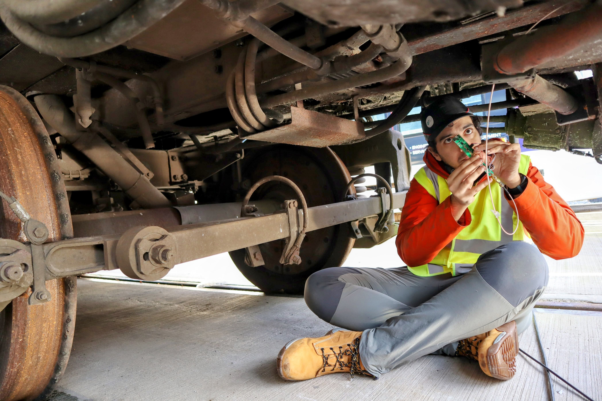
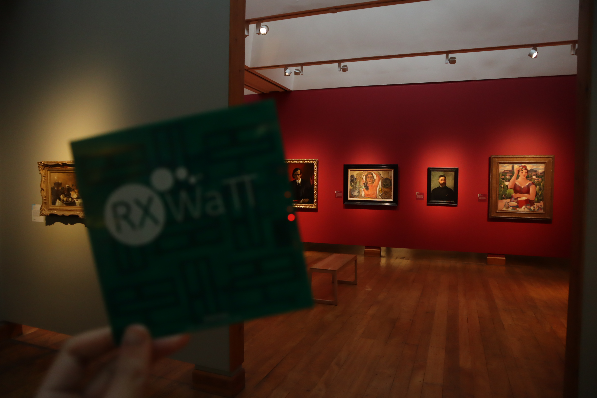
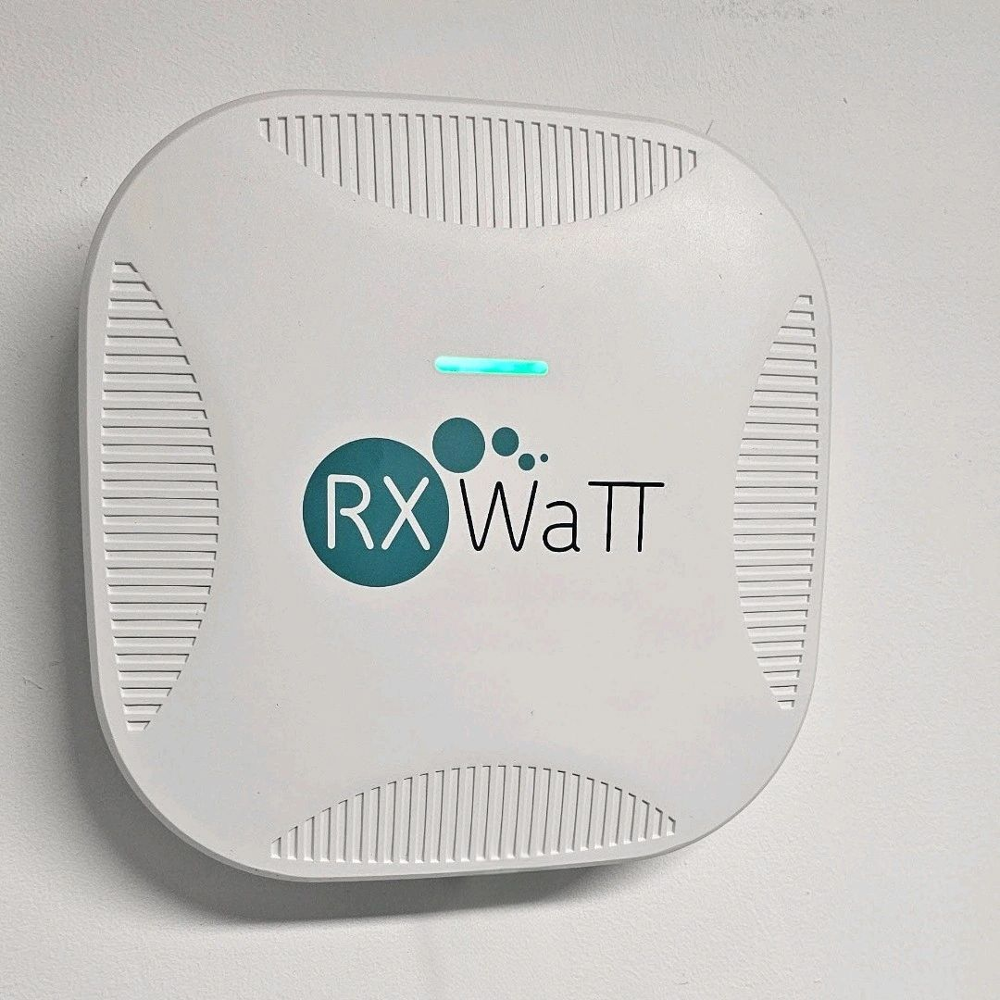

Rail Monitoring
Battery-free sensing for rolling stock and industrial assets
Railway carriages are a prime example of high-value assets which require additional sensory insights to reduce maintenance and operation costs. RX Watt has already demonstrated successful field testing in this space through a contract funded by DBT and DSIT under the International Rail programme.
We optimized the antennas, arrangement, and packaging for this unique and harsh environment, including developing advanced sensing for industrial vibrations. Contact us to find out more about our patent-pending antenna designs for improved sensor connectivity.
- Grounded in successful contract delivery funded by DBT and DSIT.
- Enabling real-time sensor data collection from battery-free tags, wireless-powered through the vehicle.
- Well suited to mobile assets and hard-to-access installation points.

Museum Monitoring
Low-touch sensing and asset tracking in museums
Museum and visitor-facing spaces show where battery-free sensing can reduce operational friction without adding visible infrastructure overhead. These environments often need discreet hardware, distributed endpoints, and a data path that works quietly in the background. That makes them a good example for RX Watt because the value is reducing intervention from facilities or curatorial teams.
In a museum-style setting, the design challenge spans several layers at once: tags must remain visually discreet, assets may be spread across multiple spaces, and staff still need a simple way to retrieve information without introducing a separate support burden. A wireless power gateway and integrated sensing tags make that easier to present as a site-wide system rather than a one-off gadget.
- Useful where visible maintenance should be kept to a minimum.
- Fits tagged assets, distributed collections, and sealed display zones.
- Tested in an internationally recognised art gallery and museum in Scotland.

Healthcare Tracking
Tracking mobile assets in a hospital environment
A hospital environment is a strong healthcare example because equipment moves constantly, availability matters, and maintenance teams do not want another layer of battery servicing across carts, pumps, monitors, and other mobile assets. In that context, integrated sensing tags and wireless power infrastructure can support asset visibility without adding the repeated overhead of replacing power sources across a large estate.
The value proposition is operational, hospital teams need to locate assets without an additional overhead on staff. Our wireless-powered tags can directly feed data into existing IT infrastructure and networks. The RF charging hubs can be designed for seamless and safe integration into the infrastructure, simplifying a retrofit to build a digital block chain for key assets.
- Relevant for tracking mobile equipment across wards and departments.
- Reduces battery-maintenance overhead in high-availability environments.
- Enabling med-tech innovation, from wearables to implants.